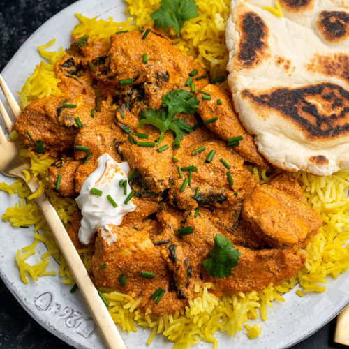

Gluten-Free Curry Recipe

Description
Need some yummy spice in your gluten-free life? Eat well with some of our
gluten-free curry! Follow at the original website Gluten Free Cup Patea
Ingredients
For the spice blend
- 2 tbsp curry powder
- 1 tbsp paprika
- 1 tsp cinnamon
- 1/2 tsp ground ginger
- 1/2 tsp asafoetida
For the curry
- 1 tbsp garlic infused olive oil
- 2 chicken breasts chopped
- 200 ml canned coconut milk
- 200 ml Greek yoghurt
- 1 tbsp tomato puree
- 1 tbsp lemon juice (optional)
- 1-2 handfuls of spinach
To Serve
- Handful of fresh chives, chopped
- Fresh Coriander
- Basmati Rice
Steps
- Place your pan over a medium heat and add a tbsp of garlic-infused oil. Once heated, add your chicken chunks and fry until almost sealed.
- Add your spice mix and stir fry for 1 minute.
- Next add your coconut milk and tomato puree. Stir and then simmer for about 10-15 minutes.
- Add your spinach and lemon juice, if using. Cook until the spinach has wilted down.
- Lastly, add your yoghurt and mix in.
- Sprinkle of some fresh chives and top with fresh coriander! Serve up with basmati rice and my 3-ingredient gluten-free naan bread.